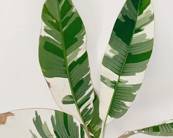
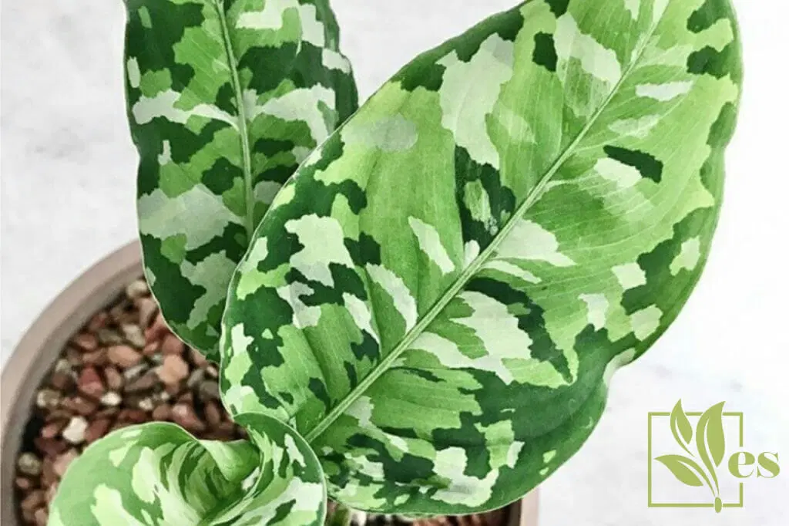

Parent of Twelve
You probably don't need much from me here. If you can sustain a calathea and a string of pearls at the same time, you should be good to go. I won't bore you with more tips, but I will offer a couple of ways to make your garden cuter! I got these animals from Barnes and Noble to hang on my plants. They are super fun and i get a lot of compliments on them! Another thing you can do is to add little plant tags. You ca buy them from that link, or you could take that as inspiration and make your own for cheap! Either way they will not fail to enhance your already beautiful collection. I've created a list of exotic house plants that you (hopefully!!) haven't hear of before. Be warned: Most of these will cost you a pretty penny and it might cost you a few years of your life to find them! Happy planting!
1. The Syngonium Pink Perfection
This plant is what philodendron pink princess wishes she was. While even more rare, if you can get your hands on one of these, it won't love varigation or die off suddenly. Although sensitive to light, this plant is beautiful and reliale. It will add a gorgeous pop of color to any space!

2.The Monstera Obliqua
This plant is the monstera adansonii's better looking cousin. It is very rare and quite fragile, but this plant will impress anyone who knows anything about plants. They also grow relatively quickly, which is unusual for rare plants!

3. The Anthurium Magnificum
This plant is a show stopper. Its massive leaves might just take over your home if you aren't careful! The Anthurium Magnificum will make your space feel like a tropical rain forest and brighten your days. It likes a lot of humidity and wwater, so make sure to take good care of it!
4. The Variagated Banana Musa Aeae
Haven't you always wanted a banana tree? Me neither, but this plant is too beautiful to pass up. When grown inforrs it makes a cute dwarf version of a regular banana tree. This type of varigation is unparalled by any other plants. If you live somewhere tropical, plant this little guy outside and eat some extremely expensive bananas!

5. The Aglaonema Pictum Tricolor
A hunter's dream plant. Its varigation makes it look like it has a camoflauge jacket on! I've been watching rare plants for years and I have never seen varigation like this. This seems to be the new "it" plant comin to tik tok, will you pick it up?
